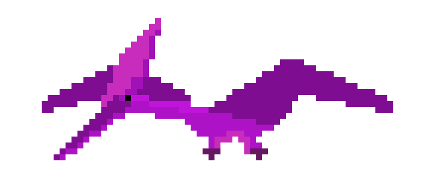
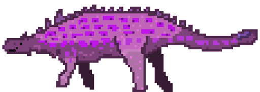
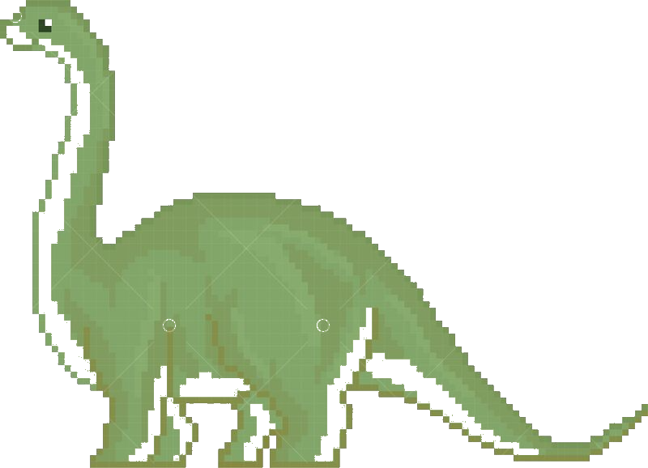
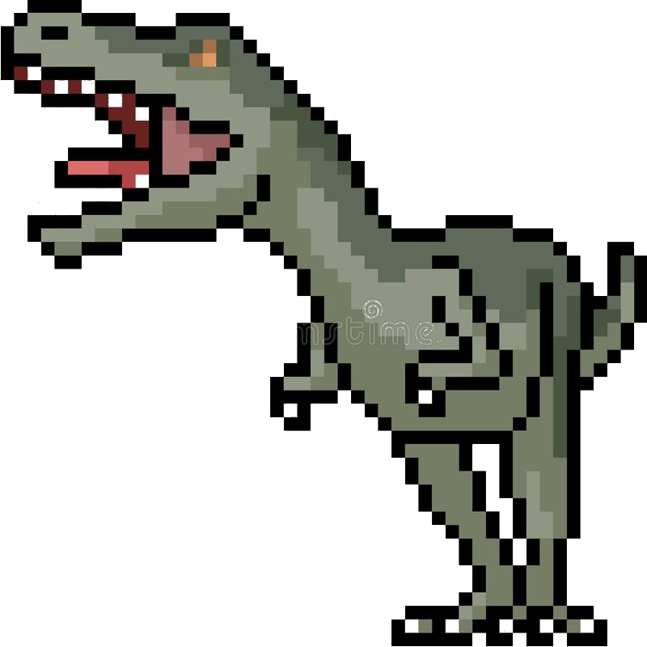
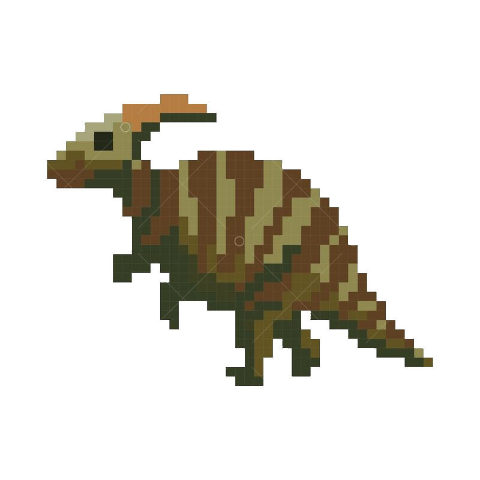
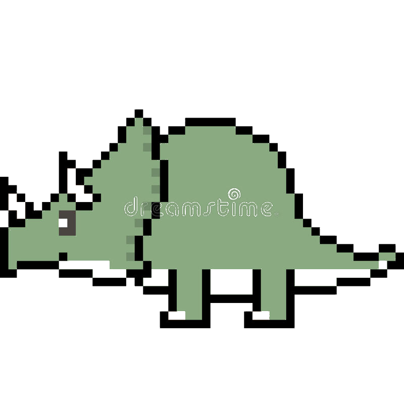

Stegosaurus is a large, plant eating dinosaur that lived around 150.8-155.7 million
years ago during the late Jurassic Period.
Facts
The meaning of stegosaurus is "Roofed Lizard".
Despite its massive size, their brain had a size of ping pong balls.
They were 4 meters (14 meters) tall.
It has an estimated length up to 9 meters (30 feet).
It has an estimated weight about 2 tons.
Click to hear the Stegosaurus
Meet the Pterodactyl!

The Pterodactyl was a flying reptile that lived during the Jurassic Period about
150 million years ago.
Facts
Pterodactyls are not dinosaurs! They are considered as winged reptiles.
Pterodactylus means "Winged Finger".
Its scientific name is Pterodactylus.
Its common name is Pterodactyl.
Pterodactyls are carnivores that ate meat. Their diet consisted of fish and other small animals.
Click to hear the Pterodactyl
Meet the Ankylosaurus!

Ankylosaurus is an armored dinosaur. It had a wide, heavily armored skull and a large
tail club. It lived in the late Cretaceous Period, about 65.6-66.8 million years ago.
Facts
The name ankylosaurus means "Fused Lizard".
They were part of a group of dinosaurs known as Thyreophorans (armored dinosaurs).
The ankylosaurus was a herbivour that ate foliage near the ground.
It has an estimated length is between 20 to 26 feet.
It has an estimated weight is between 2 and 8 tons.
Click to hear the Ankylosaurus
Meet the Apatosaurus!

Apatosaurus, genus of at least two species of giant herbivorous sauropod dinosaurs.
They lived between 151-156 million years ago, during the late Jurassic Period.
Facts
The name Apatosaurus means "Deceptive Lizards".
They were part of a group of dinosaurs known as sauropods.
The Apatosaurus was a high browsing herbivour and ate foliage at the top of tree canopies.
It's estimated lifespan is believed to be around 100 years.
It's believed that the Apatosaurus sometimes swallow food whole and have to swallow
rocks to aid their digestion.
Click to hear the Apatosaurus
Meet the Tyranosaurus Rex!

The Tyranosaurus Rex or commonly known as T-Rex was one of the most ferocious predators
to have ever existed. It lived about 66-68 million during the Cretaceous Period.
Facts
Tyrannosaurus Rex means "Tyrant Lizard".
T-Rex were part of a group of dinosaurs known as theropod.
The T-Rex was the largest apex predator of the dinosaur era.
It can run between 10 to 25 miles per hour.
It is estimated that it had 50 to 60 large teeth.
Click to hear the Tyrannosaurus Rex
Meet the Parasaurolophus!

Parasaurolophus is a herbivorous dinosaur that walked both as a biped and as a
quaduped. It lived in what is now North America and possibly Asia during the late
Cretaceous Period, about 73-76.5 million years ago.
Facts
Parasaurolophus means "Near Crested Lizard".
They were part of a group of dinosaurs known as ornithopods.
They had hundreds of teeth that were stacked into multiple rows. As teeth were wore
down, new ones would work their way up.
It has an estimated length of 31 feet.
It has an estimated weight of 2.8 tons.
Click to hear the Parasaurolophus
Meet the Triceratops!

Triceratops is a large quadrupedal plant-eating dinosaur that had a frill of bone at the
back of its skull and three prominent horns. They lived in the Cretaceous Period from about
65.5-145.5 million years ago.
Facts
Triceratops means "Three-horned Face".
They had a bird-like beak on its mouth.
They were able to fight off predators with its three horns and the bony frill on its head.
It has an estimated weight between 6.5 to 13 tons.